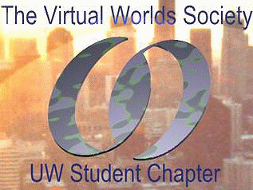
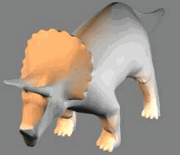

Ivan Poupyrev
Intelligent Systems Laboratory,
Hiroshima
University
poup@isl.hiroshima-u.ac.jp
Mark Billinghurst
Human Interface Technology Laboratory,
University of
Washington,
grof@hitl.washington.edu
To appear in the Looking .forward, IEEE Computer Society Student News Letter,Summer 1996
Introduction
Virtual Reality (VR) has the potential to radically alter the way people interact with computers and each other. Blending interaction, immersion and imagination, the key features of virtual reality, developers are creating synthetic worlds which do not exist in reality. This article outlines the SmithsoniSAUR project which aims to develop one such world: a world which disappeared million years ago - the world of the dinosaurs.
SmithsoniSAUR in brief
This SmithsoniSAUR project involves creating an immersive virtual world of dinosaurs which users can enter and explore freely. It will provide people with the unique experience of being in the dinosaurs habitat and get the feeling of being part of this prehistoric world.
This world will be completed by June 1996, when it will be opened for general public at the IEEE Multimedia Systems and Applications Conference and Exhibition in Hiroshima, Japan. This prestigious exhibition is organized in cooperation with National Multimedia Program conducted by NTT (Nippon Telegraph and Telephone Corporation) and will have exhibits from all the major Japanese and international multimedia companies. The exhibition will be open to all people interested in up-to-date multimedia technologies, not just registered conference participants, so we expect a great interest from general public toward.
The idea of SmithsoniSAUR project originated with Prof. Ichikawa of Hiroshima University, the Chair of steering committee for the IEEE Conference. He and other members of the organizing committee were very interested in presenting an entertaining virtual reality experience which would attract the general public to the conference exhibition. In the Fall of 1995 Professor Ichikawa suggested idea of the project to the student chapter of the Virtual World Society (VWS) at University of Washington in Seattle and promised endorsement from organizing committee of the IEEE Conference. Student members of the VWS were very excited to be involved in this project and accepted the offer to develop SmithsoniSAUR.
Thus the SmithsoniSAUR project began.
What is the Virtual World Society?
The Virtual World Society is a non-profit organization dedicated to the spread of Virtual Reality technology and expertise. It was founded in 1994 by Dr. Tom Furness who is director of the Human Interface Technology Lab at the University of Washington. The current president is Joel Orr, a nationally known US expert on computer technology and trends.

Fig. 1 The logo of the Virtual World Society
The very first student chapter of the VWS was started at the University of Washington in September 1995. It aims to bring together students and professionals, from different backgrounds, who share a common interest in developing virtual reality applications. One of the current challenges with VR is connecting the people with the technical knowledge with those who have ideas for innovative applications. Increased synergy between engineers, programmers, artists and other professions is important to develop compelling applications. The student chapter of the Virtual Worlds Society is a place where technical people can rub shoulders with non-technical and both benefit. As an example of this, the SmithsoniSAUR project currently involves students from a wide range of different backgrounds including Art, Architecture, Engineering, Computer Science and Environmental Design.
SmithsoniSAUR - a sample scenario
There are several unique challenges in developing the SmithsoniSAUR world. Designing a VR experience for an exhibition open the general public imposes considerable limitations and requirements. The most severe one is time: if each visitor spends 5-6 minutes in virtual world then only 80 visitors per day can try the application. What would have happened if thousands of people will attend an exhibition? For this reason SmithsoniSAUR is designed to be a multi-user experience; up to four people can be in the virtual world at a time, with more people viewing the world on a large projection screen.
Another challenge is to provide a compelling experience in such a short time. SmithsoniSAUR consists of 3 distinctive parts: an introduction, the interactive dinosaur experience and closing. The introduction lasts for about thirty seconds and will be a 3D video where users are flown through a virtual museum and into the dinosaur exhibition hall. One of the dinosaur skeletons then leaps from it's pedestal and crashes through a glass display window. Through this hole the user can see into a prehistoric dinosaur world. At the same time the walls of the exhibition hall fade and user is transported back in time. SmithsoniSAUR now becomes interactive and the user can freely explore the land of the dinosaurs.
The interactive part of SmithsoniSAUR lasts for about four minutes and allows users to experience the prehistoric world by means of interactive real-time 3D computer graphics and 3D sound. Visitors will be armed with virtual cameras and will be able to take photographs of dinosaurs in their natural habitat, be it water, land or sky; witness battles between dinosaurs, or see the birth of baby dinosaurs. The pictures they take will be saved as images that can be printed out when they leave the world, giving them a permanent reminder of what they saw. After four minutes a giant volcano will erupt cueing visitors that it's time to escape back to the museum.
The closing part of the SmithsoniSAUR will take about 30 seconds and will automatically take users back from the dinosaurs world to the dinosaur exhibition. Walls reappears at their old place, and the users fly through museum back to where they started. After removing their head mounted display they can pick up printouts of the pictures they shot in the virtual world.
What next?
The project is currently undergoing intensive application development, using Division Ltd's VR authoring software. The whole world needs to be modeled from scratch: land, sky and water; 3D models of the trees, dinosaurs, insects and other creatures will be placed in the world. Life will then be breathed into these objects through real-time animation. The last and the most important step is to put user inside of the environment and develop interactions between the user and the objects in the world. In April the first version of the world should be completed and user evaluation will be started. A final version will be shown in Seattle in May before being shipped to Japan several weeks later. Members of the Virtual World Society will the go to Hiroshima in June and work with Japanese students from Hiroshima University to set up the system and run the demonstration during the 3 days of the exhibition.

Fig. 2 Model of the triceratops available from
Avalon site at
http://www.datalabs.com/avalon.html
Conclusions
Dinosaurs completely governed the earth for several million years and then completely disappeared. They have attracted the imagination and interest of people for centuries and now through SmithsoniSAUR people will be able to experience their world. SmithsoniSAUR is a truly international student project and will hopefully be the first of many exciting projects undertaken by the University of Washington student chapter of the Virtual World Society.
If you want to learn more about the project and the Virtual World Society please contact us. Write to Mark Billinghurst (grof@hitl.washington.edu) or Ivan Poupyrev (poup@hitl.washington.edu).
Acknowledgments
SmithsoniSAUR is a non-profit project and would not be possible without support from industry and academia. The IEEE Computer Society has endorsed the project, the Human Interface Technology Laboratory at the University of Washington has provided computers and state of the art VR equipment for development. Division Inc. has donated VR development software and Virtus Inc. has given modeling packages. Eidolon Interactive provides us with WWW access. Students of University of Tokyo are helping to digitize dinosaur models.